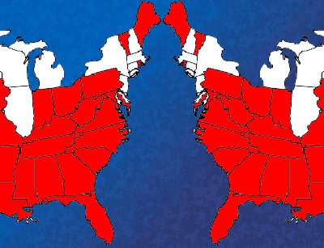

|

Red-State America Against Itself
An excerpt from What's the Matter with Kansas?: How the Conservatives Won the Heart of America
- - - - - - - - - -
byThomas Frank
 HAT OUR POLITICS have been shifting rightward for more than thirty years is a generally acknowledged fact of American life. That this rightward movement has largely been accomplished by working-class voters whose lives have been materially worsened by the conservative policies they have supported is a less comfortable fact, one we have trouble talking about in a straightforward manner. HAT OUR POLITICS have been shifting rightward for more than thirty years is a generally acknowledged fact of American life. That this rightward movement has largely been accomplished by working-class voters whose lives have been materially worsened by the conservative policies they have supported is a less comfortable fact, one we have trouble talking about in a straightforward manner.
And yet the backlash is there, whenever we care to look, from the "hardhats" of the 1960s to the "Reagan Democrats" of the 1980s to today's mad-as-hell "red states." You can see the paradox first-hand on nearly any Main Street in middle America -- "going out of business" signs side by side with placards supporting George W. Bush.
I chose to observe the phenomenon by going back to my home state of Kansas, a place that has been particularly ill-served by the conservative policies of privatization, deregulation, and de-unionization, and that has reacted to its worsening situation by becoming more conservative still. Indeed, Kansas is today the site of a ferocious struggle within the Republican Party, a fight pitting affluent moderate Republicans against conservatives from the working-class districts and the downmarket churches. And it's hard not to feel some affection for the conservative faction, even as you deplore their political views. After all, these are the people that liberalism is supposed to speak to: the hard-luck farmers, the bitter factory workers, the outsiders, the disenfranchised, the disreputable.
Democrats shed the language of class warfare
Who is to blame for this landscape of distortion, of paranoia, and of good people led astray? Though Kansas voters have chosen self-destructive policies, it is just as clear to me that liberalism deserves a large part of the blame for the backlash phenomenon. Liberalism may not be the monstrous, all-powerful conspiracy that conservatives make it out to be, but its failings are clear nonetheless. Somewhere in the last four decades liberalism ceased to be relevant to huge portions of its traditional constituency, and we can say that liberalism lost places like Wichita and Shawnee, Kansas with as much accuracy as we can point out that conservatism won them over.
This is due partially, I think, to the Democratic Party's more-or-less official response to its waning fortunes. The Democratic Leadership Council (DLC), the organization that produced such figures as Bill Clinton, Al Gore, Joe Lieberman, and Terry McAuliffe, has long been pushing the party to forget blue-collar voters and concentrate instead on recruiting affluent, white-collar professionals who are liberal on social issues. The larger interests that the DLC wants desperately to court are corporations, capable of generating campaign contributions far outweighing anything raised by organized labor. The way to collect the votes and -- more important -- the money of these coveted constituencies, "New Democrats" think, is to stand rock-solid on, say, the pro-choice position while making endless concessions on economic issues, on welfare, NAFTA, Social Security, labor law, privatization, deregulation, and the rest of it. Such Democrats explicitly rule out what they deride as "class warfare" and take great pains to emphasize their friendliness to business interests. Like the conservatives, they take economic issues off the table. As for the working-class voters who were until recently the party's very backbone, the DLC figures they will have nowhere else to go; Democrats will always be marginally better on economic issues than Republicans. Besides, what politician in this success-worshiping country really wants to be the voice of poor people? Where's the soft money in that?
This is, in drastic miniature, the criminally stupid strategy that has dominated Democratic thinking off and on ever since the "New Politics" days of the early seventies. Over the years it has enjoyed a few successes, but, as political writer E. J. Dionne has pointed out, the larger result was that both parties have become "vehicles for upper-middle-class interests" and the old class-based language of the left quickly disappeared from the universe of the respectable. The Republicans, meanwhile, were industriously fabricating their own class-based language of the right, and while they made their populist appeal to blue-collar voters, Democrats were giving those same voters -- their traditional base -- the big brush-off, ousting their representatives from positions within the party and consigning their issues, with a laugh and a sneer, to the dustbin of history. A more ruinous strategy for Democrats would be difficult to invent. And the ruination just keeps on coming. However desperately they triangulate and accommodate, the losses keep mounting.
Curiously enough, though, Democrats of the DLC variety aren't worried. They seem to look forward to a day when their party really is what David Brooks and Ann Coulter claim it to be now: a coming-together of the rich and the self-righteous. While Republicans trick out their poisonous stereotype of the liberal elite, Democrats seem determined to live up to the libel.
Such Democrats look at a situation like present-day Kansas where social conservatives war ferociously on moderate Republicans and they rub their hands with anticipation: Just look at how Ronald Reagan's "social issues" have come back to bite his party in the ass! If only the crazy Cons push a little bit more, these Democrats think, the Republican Party will alienate the wealthy suburban Mods for good, and we will be able to step in and carry places like super-affluent Mission Hills, Kansas, along with all the juicy boodle that its inhabitants are capable of throwing our way.
While I enjoy watching Republicans fight one another as much as the next guy, I don't think the Kansas story really gives true liberals any cause to cheer. Maybe someday the DLC dream will come to pass, with the Democrats having moved so far to the right that they are no different than old-fashioned moderate Republicans, and maybe then the affluent will finally come over to their side en masse. But along the way the things that liberalism once stood for -- equality and economic security -- will have been abandoned completely. Abandoned, let us remember, at the historical moment when we need them most.
 Next page | Movement building on the right Next page | Movement building on the right
1, 2, 3
|